Mini-Project #03: Do Proportional Electoral College Allocations Yield a More Representative Presidency?
Set-Up and Initial Exploration
Data I: US House Election Votes from 1976 to 2022
Download data of statewide presidential and house vote counts and house vote counts from 1976 to 2022 from The MIT Election Data Science Lab (https://electionlab.mit.edu/). This data provides detailed House 1 and presidential 2 Election voting results for us to analyze the voting pattern with parties and states.
Show the code
library(sf)library(dplyr)library(tidyverse)library(ggplot2)library(stringr)library(gt)# Data I# US Housecsv_file_path <-"//Users/haolin/Desktop/sta9750/us_house/1976-2022-house.csv"house_1976_2022 <-read.csv(csv_file_path)# US Presidentcsv_file_path <-"/Users/haolin/Desktop/sta9750/us_president/1976-2020-president.csv"president_1976_2022 <-read.csv(csv_file_path)csv_file_path <-"/Users/haolin/Desktop/sta9750/us_president/sources-president.csv"sources_president <-read.csv(csv_file_path)
Data II: Congressional Boundary Files 1976 to 2012
Downloaded congressional shapefiles from Lewis et al. for all US Congresses5 from 1976 to 2012. The data provides boundary definition for US congressional districts.
Show the code
library(sf)#Data II:congressional_boundary_dir <-"/Users/haolin/Desktop/sta9750/congressional_boundary"dir.create(congressional_boundary_dir, showWarnings =FALSE, recursive =TRUE)# Function to download shapefiles systematicallydownload_congressional_boundary_shapefiles <-function(start, end, base_url) {for (session in start:end) { file_name <-paste0("districts", sprintf("%03d", session), ".zip") url <-paste0(base_url, file_name) destfile <-file.path(congressional_boundary_dir, file_name)if (!file.exists(destfile)) {GET(url, write_disk(destfile, overwrite =TRUE))message(paste("Downloaded:", file_name)) } else {message(paste("File already exists:", file_name)) } }}# Define the base URL and download the filesbase_url <-"https://cdmaps.polisci.ucla.edu/shp/"download_congressional_boundary_shapefiles(93, 112, base_url)
Data III: Congressional Boundary Files 2014 to Present
Automatically download congressional shapefiles from the US Census Bureau for all US Congresses from 2014 to 2022. The data contains all legal boundaries and names.
Show the code
#Data III: Congressional Boundary Files 2014 to Present# Load necessary librarylibrary(httr)library(sf)# Create directory for Census shapefilescensus_dir <-"/Users/haolin/Desktop/sta9750/census_congress"dir.create(census_dir, showWarnings =FALSE, recursive =TRUE)# Function to download Census shapefiles systematicallydownload_census_shapefiles <-function(urls) {for (url in urls) { file_name <-basename(url) destfile <-file.path(census_dir, file_name)# Attempt to download the file without error handling response <-GET(url, write_disk(destfile, overwrite =TRUE)) }}# Define URLs for Census shapefilescensus_shapefile_urls <-c("https://www2.census.gov/geo/tiger/TIGER2014/CD/tl_2014_us_cd114.zip","https://www2.census.gov/geo/tiger/TIGER2015/CD/tl_2015_us_cd114.zip","https://www2.census.gov/geo/tiger/TIGER2016/CD/tl_2016_us_cd115.zip","https://www2.census.gov/geo/tiger/TIGER2017/CD/tl_2017_us_cd115.zip","https://www2.census.gov/geo/tiger/TIGER2018/CD/tl_2018_us_cd116.zip","https://www2.census.gov/geo/tiger/TIGER2019/CD/tl_2019_us_cd116.zip","https://www2.census.gov/geo/tiger/TIGER2020/CD/tl_2020_us_cd116.zip","https://www2.census.gov/geo/tiger/TIGER2021/CD/tl_2021_us_cd116.zip","https://www2.census.gov/geo/tiger/TIGER2022/CD/tl_2022_us_cd116.zip")# Download Census shapefilesdownload_census_shapefiles(census_shapefile_urls)
Initial Exploration of Vote Count Data
Task 3:
3.1 Which states have gained and lost the most seats in the US House of Representatives between 1976 and 2022?
I filtered the seat counts for year 1976 and year 2000, then merged two data to find the seat changes and selected top 5 states for gain and loses to create the bar chart. According to the bar chart, Taxes gained most seats with net change of 14 seats, following by Florida. New York lost the most seats with differences of 14 seats.
Show the code
library(dplyr)library(ggplot2)seat_counts <- house_1976_2022 |>group_by(year, state) |>summarize(seat_count =n_distinct(district), .groups ='drop')# Filter for the years 1976 and 2022seat_counts_1976 <- seat_counts |>filter(year ==1976) |>select(state, seat_count) |>rename(seats_1976 = seat_count)seat_counts_2022 <- seat_counts |>filter(year ==2022) |>select(state, seat_count) |>rename(seats_2022 = seat_count)# Merge 1976 and 2022 data to compute seat changesseat_changes <- seat_counts_1976 |>inner_join(seat_counts_2022, by ="state") |>mutate(seat_change = seats_2022 - seats_1976) |>arrange(desc(seat_change))# Select top 5 states with most gains and most lossestop_gain_loss <- seat_changes |>slice(c(1:5, (n() -4):n()))#graphggplot(top_gain_loss, aes(x =reorder(state, seat_change), y = seat_change, fill = seat_change >0)) +geom_bar(stat ="identity", show.legend =FALSE) +geom_text(aes(label = seat_change), position =position_dodge(width =0.9), vjust =-0.2, size =4) +scale_fill_manual(values =c("pink", "skyblue")) +coord_flip() +labs(title ="Top 5 States with Most Gained and Lost Seats \nin the US House (1976 - 2022)",x ="State", y ="Net Change in Seats") +theme_minimal()
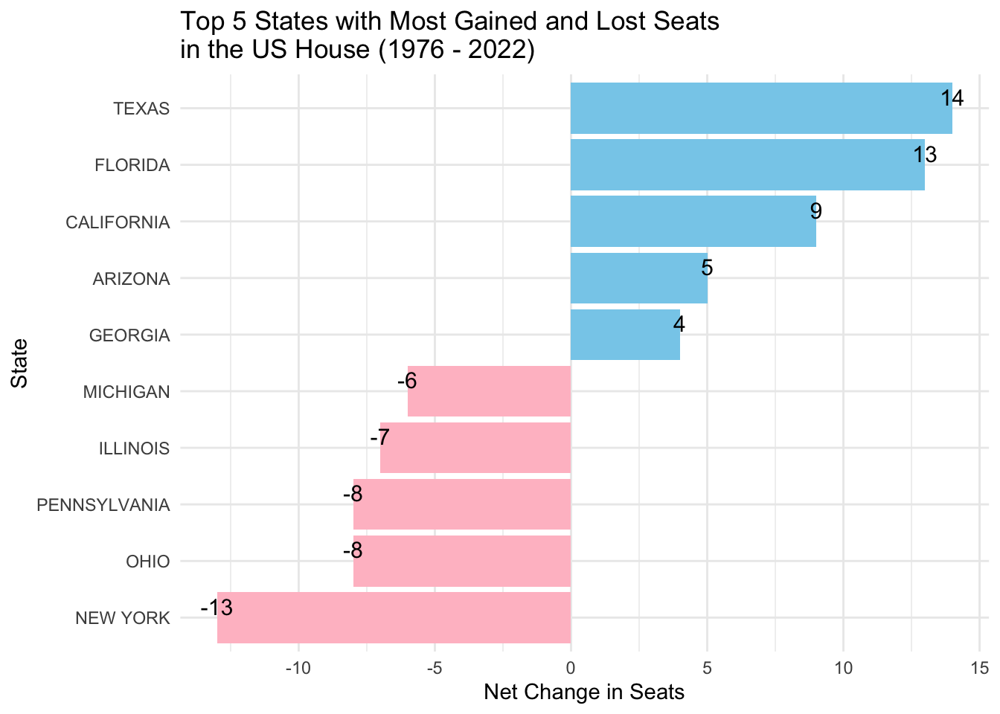
3.2 Are there any elections in our data where the election would have had a different outcome if the “fusion” system was not used and candidates only received the votes their received from their “major party line” (Democrat or Republican) and not their total number of votes across all lines?
Based on the analysis, NYS’s fusion system can affect election outcomes. By allowing candidates to on multiple “lines” on the ballot and calculating total votes from each line, fusion voting can benefit candidates from smaller parties. When a candidate’s total votes across all parties exceeds the votes of his or her major party, fusion voting can effectively achieve victory, which is unlikely to happen under a single-party voting system.
Show the code
# Step 1: Filter data for New York State electionsny_elections <- house_1976_2022 |>filter(state =="NEW YORK")# Step 2: Identify candidates' major party votes (Democratic or Republican only)# and their total votes across all linesmajor_party_votes <- ny_elections |>filter(party %in%c("DEMOCRAT", "REPUBLICAN")) |>group_by(year, district, candidate) |>summarize(major_party_votes =sum(candidatevotes), .groups ='drop')total_votes <- ny_elections |>group_by(year, district, candidate) |>summarize(total_votes =sum(candidatevotes), .groups ='drop')# Step 3: Merge datasets to compare outcomes with and without fusionelection_outcomes <- major_party_votes |>inner_join(total_votes, by =c("year", "district", "candidate")) |>group_by(year, district) |>mutate(winner_major_party = candidate[which.max(major_party_votes)],winner_total_votes = candidate[which.max(total_votes)],different_outcome = winner_major_party != winner_total_votes ) |>filter(different_outcome ==TRUE)# Display the elections where the outcome would differelection_outcomes |>select(year, district, candidate, major_party_votes, total_votes, winner_major_party, winner_total_votes, different_outcome)
# A tibble: 44 × 8
# Groups: year, district [22]
year district candidate major_party_votes total_votes winner_major_party
<int> <int> <chr> <int> <int> <chr>
1 1976 29 EDWARD W PAT… 95361 100663 JOSEPH A MARTINO
2 1976 29 JOSEPH A MAR… 96476 96476 JOSEPH A MARTINO
3 1980 3 GREGORY W CA… 74868 87952 JEROME A AMBRO JR
4 1980 3 JEROME A AMB… 75389 83389 JEROME A AMBRO JR
5 1980 6 JOHN LEBOUTI… 71838 89762 LESTER L WOLFF
6 1980 6 LESTER L WOL… 74319 80209 LESTER L WOLFF
7 1984 20 JOSEPH J DIO… 93518 106958 OREN J TEICHER
8 1984 20 OREN J TEICH… 102842 102842 OREN J TEICHER
9 1986 27 GEORGE C WOR… 77175 83430 ROSEMARY S POOLER
10 1986 27 ROSEMARY S P… 81133 82491 ROSEMARY S POOLER
# ℹ 34 more rows
# ℹ 2 more variables: winner_total_votes <chr>, different_outcome <lgl>
3.3 Do presidential candidates tend to run ahead of or run behind congressional candidates in the same state? That is, does a Democratic candidate for president tend to get more votes in a given state than all Democratic congressional candidates in the same state?
– By calculating average votes differences of presidential candidates and congressional candidates for each state,it shows that no matter democratic or republican, congressional candidates tends to get more votes in the same states.
Does this trend differ over time?
– It may differ over time. Based on the line graph of “Average Vote Difference Over Time”, during 1980s and 1990s, they have more differences, but some time on 1990s and 2000-2010, they have less differences.
Does it differ across states or across parties? Are any presidents particularly more or less popular than their co-partisans?
– It differ across the states. Based on the graph, in some states like FL, congressional condidates ten to get more votes, but in MA, presidential candidates tend to get more votes. But the differ across the states are not obviously as differ across parties. Especially Republican party, they tend to get more votes as presidential candidates.
Show the code
#filter house data for democratic and republicanhouse_votes <- house_1976_2022 |>filter(party %in%c("DEMOCRAT", "REPUBLICAN")) |>group_by(year, state, party) |>summarize(total_votes =sum(candidatevotes), .groups ='drop')# Filter Presidential data for Democratic and Republican candidatespresident_votes <- president_1976_2022 |>filter(party_simplified %in%c("DEMOCRAT", "REPUBLICAN")) |>group_by(year, state, party = party_simplified) |>summarize(total_votes =sum(candidatevotes), .groups ='drop')# Merge House and Presidential votes by year, state, and partyhouse_presidential_votes <- house_votes |>inner_join(president_votes, by =c("year", "state", "party"), suffix =c("_house", "_president")) |>mutate(vote_diff = total_votes_president - total_votes_house)# Calculate average vote difference by year and party to examine trends over timevotes_trend_time <- house_presidential_votes |>group_by(year, party) |>summarize(avg_vote_diff =mean(vote_diff), .groups ='drop')# Calculate average vote difference by state and party to examine trends across statesvotes_states <- house_presidential_votes |>group_by(state, party) |>summarize(avg_vote_diff =mean(vote_diff), .groups ='drop')# Plot trends over timeggplot(votes_trend_time, aes(x = year, y = avg_vote_diff, color = party)) +geom_line() +labs(title ="Average Vote Difference Over Time (President vs. Congressional Candidates)",x ="Year", y ="Average Vote Difference (President - House)",color ="Party") +theme_minimal()
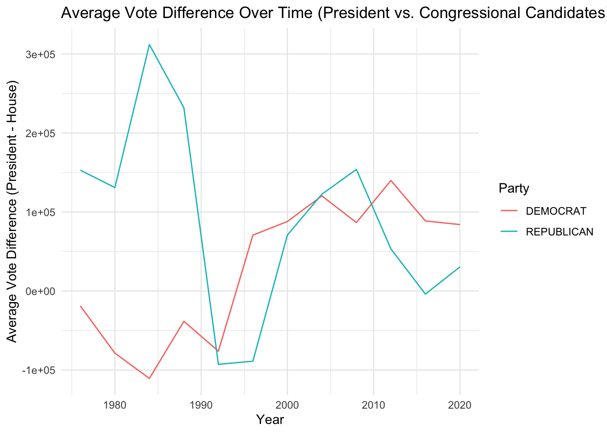
Show the code
# Plot trends across statesggplot(votes_states, aes(x =reorder(state, avg_vote_diff), y = avg_vote_diff, fill = party)) +geom_bar(stat ="identity", position ="dodge") +labs(title ="Average Vote Difference Across States (President vs. Congressional Candidates)",x ="State", y ="Average Vote Difference (President - House)",fill ="Party") +coord_flip() +theme_minimal()
#Task 4:#| code-fold: true#| code-summary: "Show the code"# Load necessary librarylibrary(sf)# Function to read specific Census shapefiles into Rread_census_shapefiles <-function(directory, filenames) { shapefiles <-list.files(directory, pattern ="\\.zip$", full.names =TRUE) results <-list()for (zip_file in shapefiles) { unzip_dir <-tempdir()unzip(zip_file, exdir = unzip_dir) shp_files <-list.files(unzip_dir, pattern ="\\.shp$", full.names =TRUE, recursive =TRUE)for (shp_file in shp_files) {# Check if the shapefile matches the desired filenamesif (basename(shp_file) %in% filenames) {# Attempt to read the shapefile without error handling sf_object <- sf::st_read(shp_file, quiet=TRUE) results[[basename(shp_file)]] <- sf_object } } }return(results)}# List of specific filenames to readdesired_filenames <-c("tl_2014_us_cd114.shp","tl_2015_us_cd114.shp","tl_2016_us_cd115.shp","tl_2017_us_cd115.shp","tl_2018_us_cd116.shp","tl_2019_us_cd116.shp","tl_2020_us_cd116.shp","tl_2021_us_cd116.shp","tl_2022_us_cd116.shp")# Read the downloaded Census shapefiles into Rcensus_shapefiles <-read_census_shapefiles(census_dir, desired_filenames)# UCLA file# Load necessary librarylibrary(sf)# Function to read UCLA shapefiles into Rread_congressional_boundary_shapefiles <-function(directory) { shapefiles <-list.files(directory, pattern ="\\.zip$", full.names =TRUE) results <-list()for (zip_file in shapefiles) { unzip_dir <-tempdir()unzip(zip_file, exdir = unzip_dir) shp_files <-list.files(unzip_dir, pattern ="\\.shp$", full.names =TRUE, recursive =TRUE)for (shp_file in shp_files) {# Attempt to read the shapefile without error handling sf_object <- sf::st_read(shp_file, quiet=TRUE) results[[basename(shp_file)]] <- sf_object } }return(results)}# Read the downloaded UCLA shapefiles into Rcongressional_boundary_shapefiles <-# Function to read UCLA shapefiles into Rread_congressional_boundary_shapefiles(congressional_boundary_dir)#st of GPS coordinates which outline a spatial region.ggplot(nyc_sf, aes(geometry=geometry)) +geom_sf()
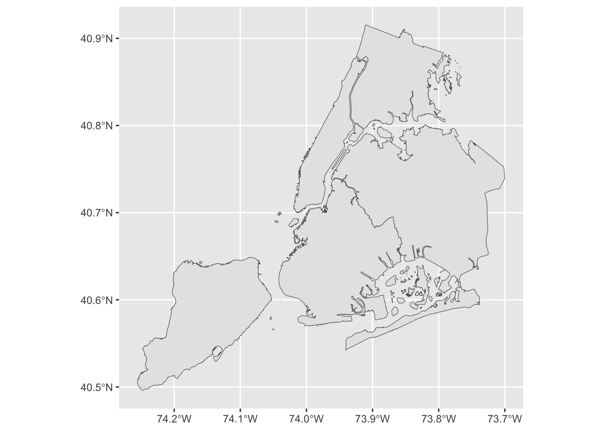
Show the code
ggplot(nyc_sf, aes(geometry=geometry, fill = shape_area)) +geom_sf()
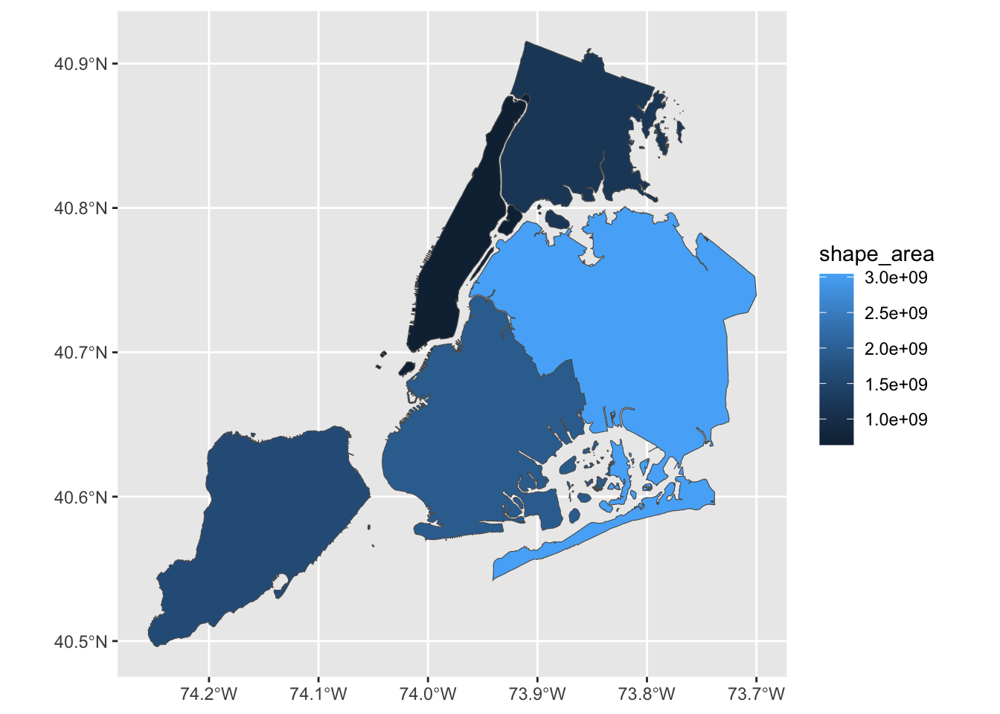
Task 5: Chloropleth Visualization of the 2000 Presidential Election Electoral College Results
The downloaded binary packages are in
/var/folders/bq/05hlr9wx4v77q56gl3760zf40000gn/T//RtmpNnwCVd/downloaded_packages
Show the code
library(maps)# Correct path for reading the shapefile directly from the zipdistrict106_path <-"/Users/haolin/Desktop/sta9750/congressional_boundary/district106Shapes/districts106.shp"district106 <-st_read(district106_path)
Reading layer `districts106' from data source
`/Users/haolin/Desktop/sta9750/congressional_boundary/district106Shapes/districts106.shp'
using driver `ESRI Shapefile'
Simple feature collection with 436 features and 15 fields (with 1 geometry empty)
Geometry type: MULTIPOLYGON
Dimension: XY
Bounding box: xmin: -179.1473 ymin: 18.9177 xmax: 179.7785 ymax: 71.35256
Geodetic CRS: GRS 1980(IUGG, 1980)
Show the code
# Create electoral college votes columndistrict106 <- district106 |>mutate(STATENAME =tolower(STATENAME)) |>select(-geometry) |>as.data.frame() |>group_by(STATENAME) |>summarize( EC =n() +2)# show winning party for each statepresident_2000 <- president_1976_2022 |>filter(year ==2000, party_detailed %in%c("DEMOCRAT", "REPUBLICAN")) |>group_by(state, party_detailed) |>summarize(total_votes =sum(candidatevotes), .groups ='drop')vote_results_2000 <- president_2000 |>mutate(state =tolower(state)) |>group_by(state) |>mutate(winning_party = party_detailed[which.max(total_votes)]) |>slice_max(total_votes, n =1) |>ungroup()# the Winning Party for Each Statewinners_2000 <- president_2000 |>group_by(state) |>filter(total_votes ==max(total_votes)) |>summarise(winning_party =first(party_detailed), .groups ='drop')# Load U.S. States Map Datastates_map <-st_as_sf(maps::map("state", fill =TRUE, plot =FALSE))winners_2000 <- winners_2000 |>mutate(state =tolower(state)) states_map <- states_map |>mutate(ID =tolower(ID)) # Merge the Winning Party and Map Datamap_data <- states_map |>left_join(winners_2000, by =c("ID"="state")) |>left_join(district106, by =c("ID"="STATENAME"))map_data <- map_data |>mutate(states_abb =case_when( ID =="alabama"~"AL", ID =="arizona"~"AZ", ID =="arkansas"~"AR", ID =="california"~"CA", ID =="colorado"~"CO", ID =="connecticut"~"CT", ID =="delaware"~"DE", ID =="district of columbia"~"DC", ID =="florida"~"FL", ID =="georgia"~"GA", ID =="idaho"~"ID", ID =="illinois"~"IL", ID =="indiana"~"IN", ID =="iowa"~"IA", ID =="kansas"~"KS", ID =="kentucky"~"KY", ID =="louisiana"~"LA", ID =="maine"~"ME", ID =="maryland"~"MD", ID =="massachusetts"~"MA", ID =="michigan"~"MI", ID =="minnesota"~"MN", ID =="mississippi"~"MS", ID =="missouri"~"MO", ID =="montana"~"MT", ID =="nebraska"~"NE", ID =="nevada"~"NV", ID =="new hampshire"~"NH", ID =="new jersey"~"NJ", ID =="new mexico"~"NM", ID =="new york"~"NY", ID =="north carolina"~"NC", ID =="north dakota"~"ND", ID =="ohio"~"OH", ID =="oklahoma"~"OK", ID =="oregon"~"OR", ID =="pennsylvania"~"PA", ID =="rhode island"~"RI", ID =="south carolina"~"SC", ID =="south dakota"~"SD", ID =="tennessee"~"TN", ID =="texas"~"TX", ID =="utah"~"UT", ID =="vermont"~"VT", ID =="virginia"~"VA", ID =="washington"~"WA", ID =="west virginia"~"WV", ID =="wisconsin"~"WI", ID =="wyoming"~"WY",TRUE~NA_character_# In case of missing values, set to NA ))base_map <-ggplot(data = map_data) +geom_sf(aes(fill = winning_party), color ="black") +# Fill states based on winning partyscale_fill_manual(values =c("DEMOCRAT"="blue", "REPUBLICAN"="red"),labels =c("DEMOCRAT"="Gore", "REPUBLICAN"="Bush"),name ="Winning Party") +geom_sf_text(aes(label = EC), size =3, color ="black", nudge_y =0.5) +labs(title ="2000 Presidential Election Results by State",subtitle ="Bush vs. Gore",x =NULL, y =NULL) +theme_minimal() +theme(axis.text =element_blank(), axis.ticks =element_blank()) +theme(legend.position ="bottom")print(base_map)
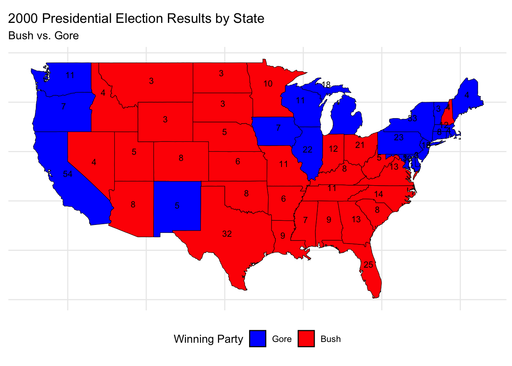
Task 6: Electoral College Results Over Time
Show the code
plot_election_map <-function(election_year, shapefile_key) {#districts districts <- congressional_boundary_shapefiles[[shapefile_key]]#Create electoral college votes column districts_EC <- districts |>mutate(STATENAME =toupper(STATENAME)) |>select(-geometry) |>as.data.frame() |>group_by(STATENAME) |>summarize(EC =n() +2)#year and the winning party per state election_data <- president_1976_2022 |>filter(year == election_year) |>group_by(state) |>mutate(winning_party = party_simplified[which.max(candidatevotes)]) |>slice_max(candidatevotes, n =1) |>ungroup() election_EC <- districts_EC |>left_join(election_data, by =c("STATENAME"="state")) |>select(state = STATENAME, EC, winning_party, state_fips)#Import shapefiles for statesinstall.packages("usmap", repos ="https://cloud.r-project.org/") us_state_shapefiles <- usmap::us_map(regions ="states") |>mutate(fips =as.integer(fips))#join between election data and state shapefiles election_states <- election_EC |>left_join(us_state_shapefiles, by =c("state_fips"="fips"))#Ensure merged data is a valid sf object election_states_sf <-st_as_sf(election_states)#Plot the map with colors based on the winning party and add EC vote labels plot <-ggplot(data = election_states_sf) +geom_sf(aes(fill = winning_party), color ="white", size =0.2) +# Color by winning partyscale_fill_manual(values =c("REPUBLICAN"="red", "DEMOCRAT"="blue"), labels =c("REPUBLICAN"="Republican", "DEMOCRAT"="Democratic"), name ="Winning Party") +# Red for Republican, Blue for Democratgeom_sf_text(aes(label = EC), color ="black", size =3, fontface ="bold") +# Add EC vote labelstheme_minimal() +labs(title =paste(election_year, "Presidential Election: Winning Party by State")) +# Title with dynamic yeartheme(legend.position ="bottom", plot.title =element_text(hjust =0.5, size =16))# Explicitly print the plotprint(plot)}# Define the years of interest and the corresponding shapefile keysyears <-c(1976, 1980, 1984, 1988, 1992, 1996, 2000, 2004, 2008, 2012)shapefile_keys <-c("districts094.shp", "districts096.shp", "districts098.shp", "districts100.shp", "districts102.shp", "districts104.shp", "districts106.shp", "districts108.shp", "districts110.shp", "districts112.shp")# Loop through each year and plot the mapfor (i in1:length(years)) {plot_election_map(years[i], shapefile_keys[i])}
The downloaded binary packages are in
/var/folders/bq/05hlr9wx4v77q56gl3760zf40000gn/T//RtmpNnwCVd/downloaded_packages
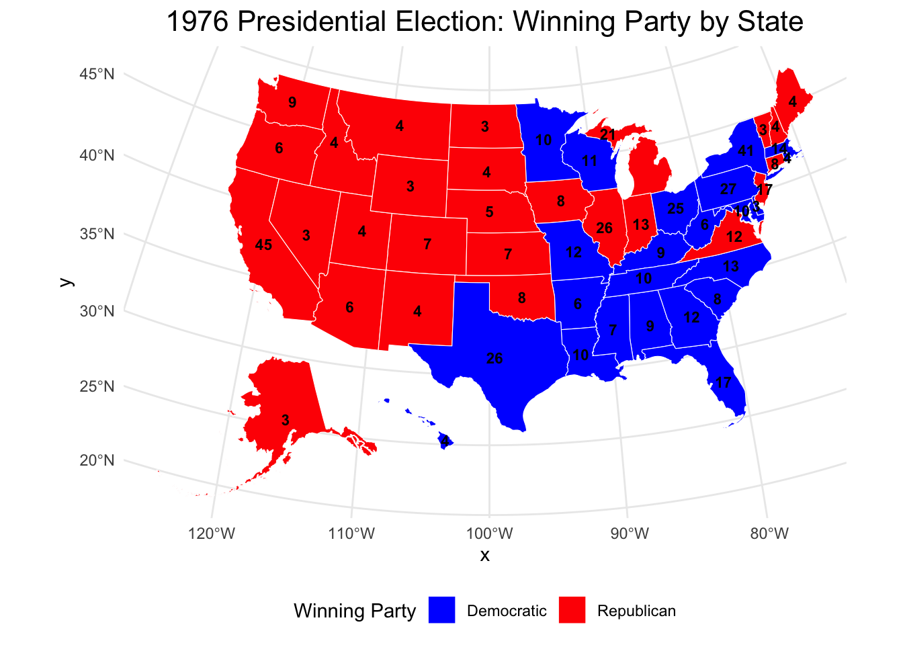
The downloaded binary packages are in
/var/folders/bq/05hlr9wx4v77q56gl3760zf40000gn/T//RtmpNnwCVd/downloaded_packages
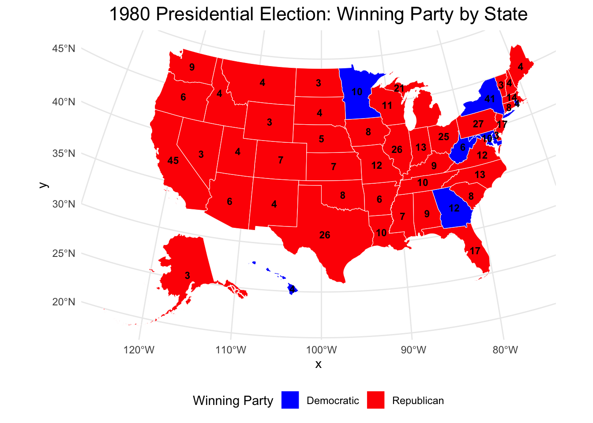
The downloaded binary packages are in
/var/folders/bq/05hlr9wx4v77q56gl3760zf40000gn/T//RtmpNnwCVd/downloaded_packages
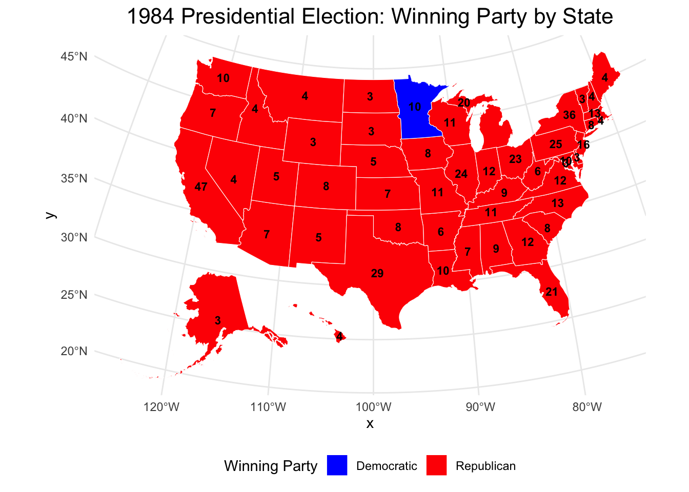
The downloaded binary packages are in
/var/folders/bq/05hlr9wx4v77q56gl3760zf40000gn/T//RtmpNnwCVd/downloaded_packages
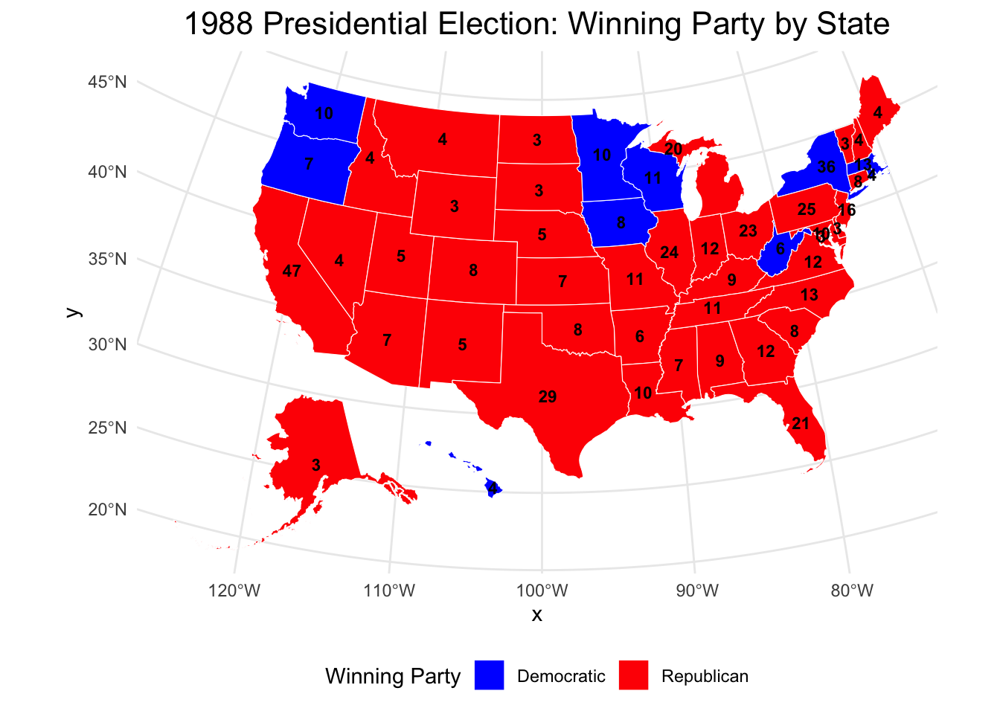
The downloaded binary packages are in
/var/folders/bq/05hlr9wx4v77q56gl3760zf40000gn/T//RtmpNnwCVd/downloaded_packages
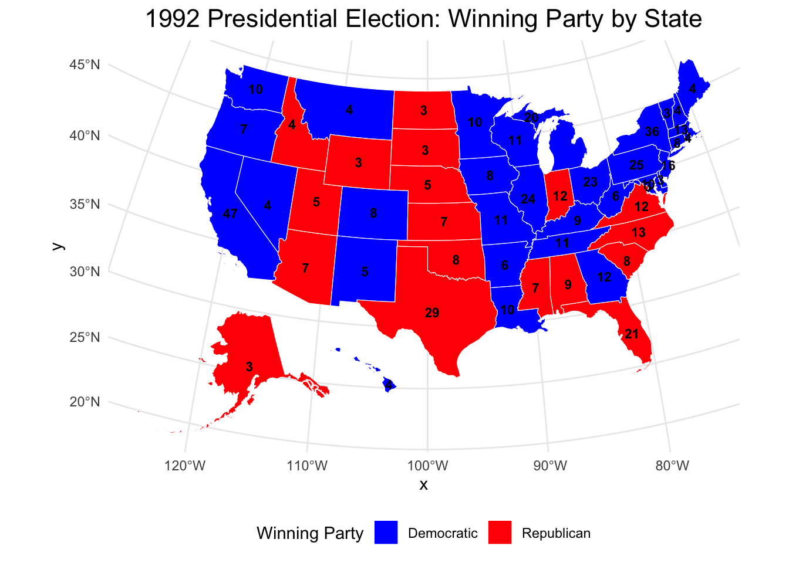
The downloaded binary packages are in
/var/folders/bq/05hlr9wx4v77q56gl3760zf40000gn/T//RtmpNnwCVd/downloaded_packages
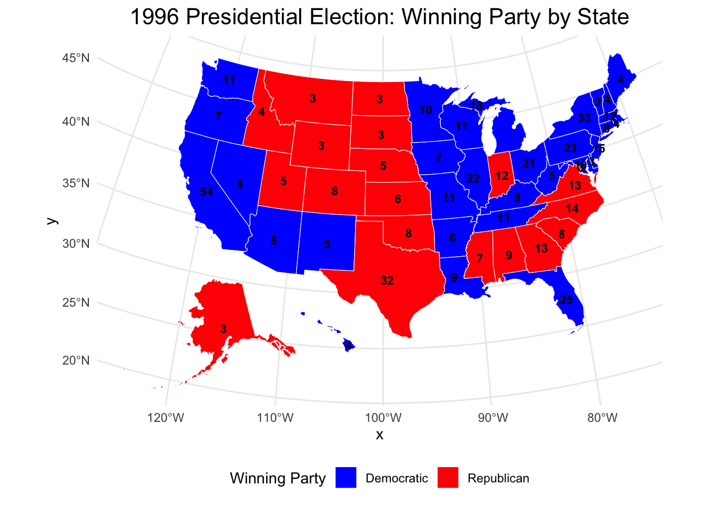
The downloaded binary packages are in
/var/folders/bq/05hlr9wx4v77q56gl3760zf40000gn/T//RtmpNnwCVd/downloaded_packages
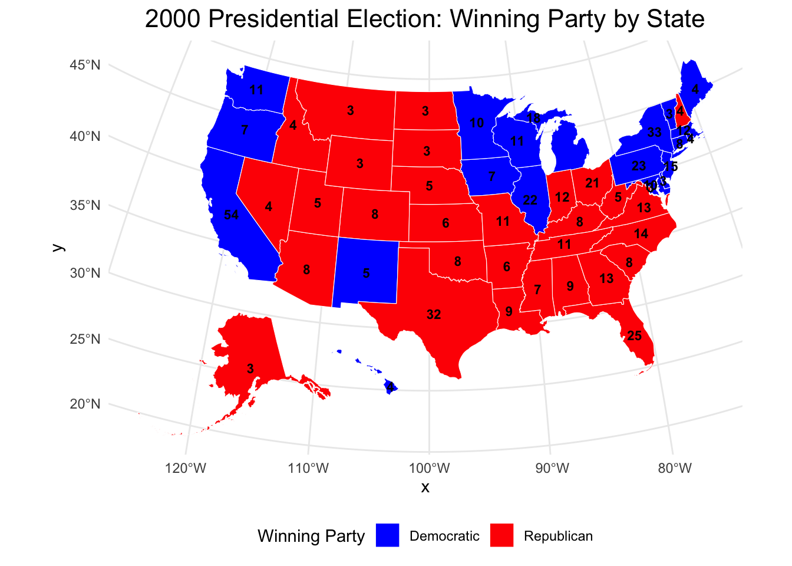
The downloaded binary packages are in
/var/folders/bq/05hlr9wx4v77q56gl3760zf40000gn/T//RtmpNnwCVd/downloaded_packages
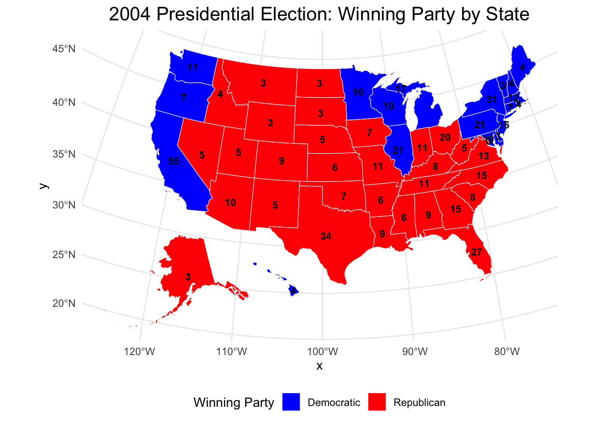
The downloaded binary packages are in
/var/folders/bq/05hlr9wx4v77q56gl3760zf40000gn/T//RtmpNnwCVd/downloaded_packages
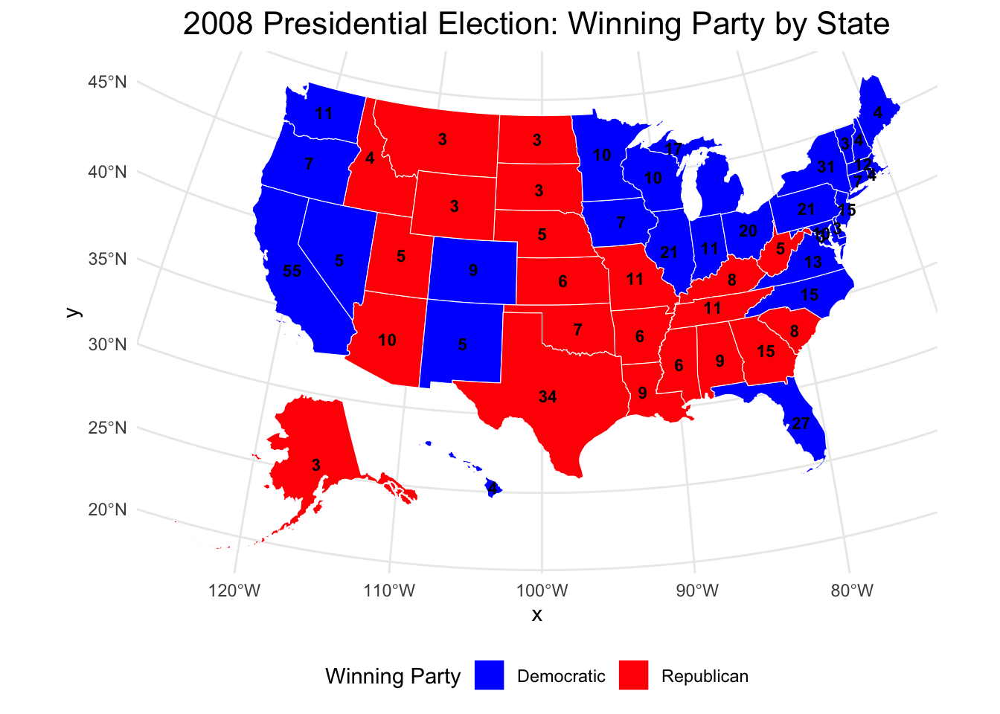
The downloaded binary packages are in
/var/folders/bq/05hlr9wx4v77q56gl3760zf40000gn/T//RtmpNnwCVd/downloaded_packages
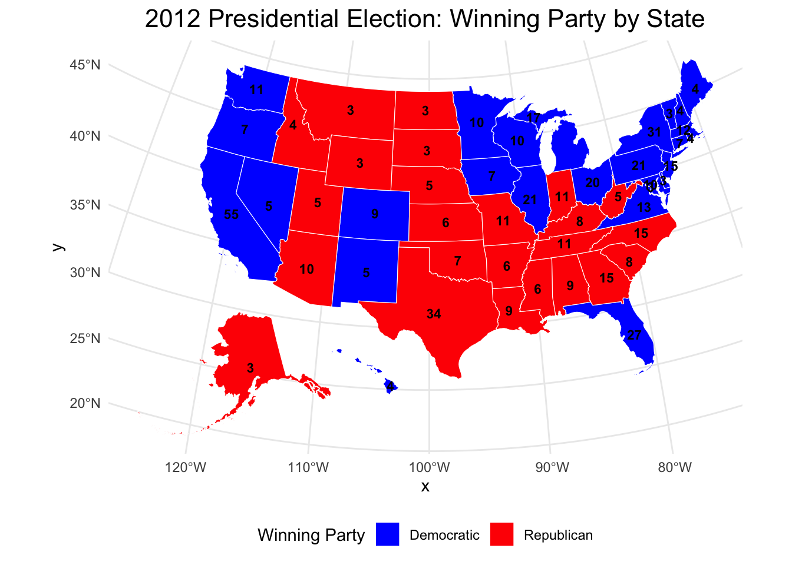
Task 7:
State-Wide Winner-Take-All:
# Filter data for presidential winner each state and relevant yearsvote_data <- president_1976_2022 |>filter(year >=1976& year <=2020, office =="US PRESIDENT") |>group_by(year, state) |>filter(candidatevotes ==max(candidatevotes, na.rm =TRUE)) |>summarize(winner =first(candidate),party =first(party_simplified),highest_votes =max(candidatevotes, na.rm =TRUE))
result_data <- president_1976_2022 |>filter(office =="US PRESIDENT", year %in%seq(1976, 2020, by =4))highest_votes_per_party <- result_data |>group_by(year, state, party_simplified) |>summarise(total_votes =sum(candidatevotes, na.rm =TRUE), .groups ="drop")# Identify the winning party for each state and year based on the highest votesstate_winners_atlarge <- highest_votes_per_party |>group_by(year, state) |>filter(total_votes ==max(total_votes)) |>slice(1) |>ungroup()
Footnotes
MIT Election Data and Science Lab, 2017, “U.S. House 1976–2022”, https://doi.org/10.7910/DVN/IG0UN2, Harvard Dataverse, V13, UNF:6:Ky5FkettbvohjTSN/IVldA== [fileUNF]↩︎
MIT Election Data and Science Lab, 2017, “U.S. President 1976–2020”, https://doi.org/10.7910/DVN/42MVDX, Harvard Dataverse, V8, UNF:6:F0opd1IRbeYI9QyVfzglUw== [fileUNF]↩︎